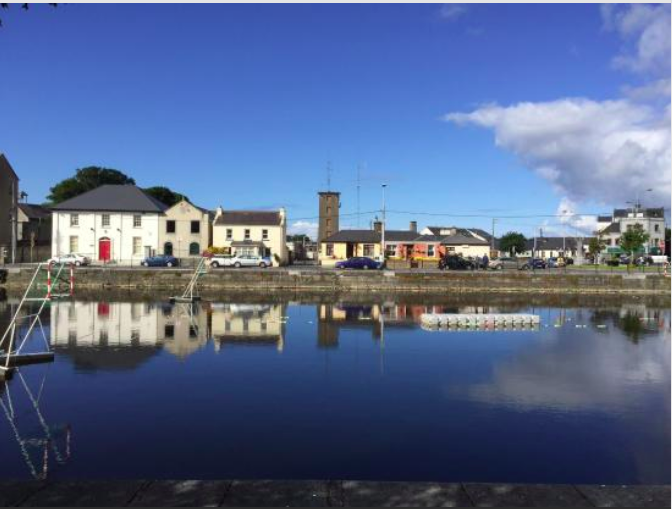
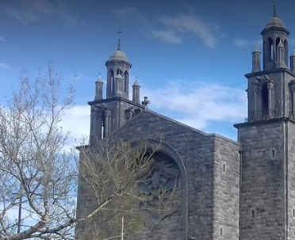
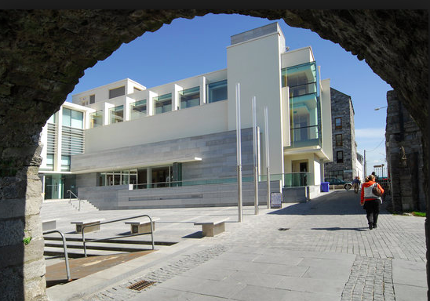
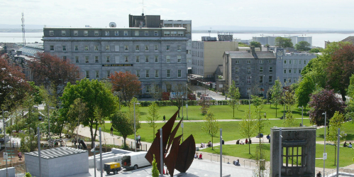
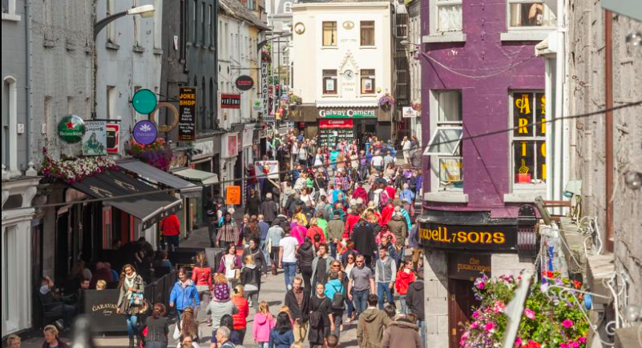

Activities
-
Spanish Arch
The two arches were part of the extension of the city wall from Martin's Tower to the bank of the River Corrib, as a measure to protect the city's quays, which were in the area once known as the Fish Market.
-
Galway Cathedral
Expansive green-domed Catholic cathedral, modern and airy, green-domed, renaissance-style Catholic cathedral, with a mosaic of JF Kennedy.
-
Galway City Museum
Compact venue rich in local history, with small displays of documents, photographs, memorabilia and medieval artefacts chronicling urban life.
-
Eyre Square
Leafy meeting place in the city centre. Popular square in the heart of the city featuring grassy areas, trees, sculptures and a playground.
-
Shop Street
Shop Street is the main thoroughfare of the city of Galway in the west of Ireland. It has been pedestrianised since the late 20th century. As its name suggests, it is Galway's main shopping area.
Sightseeing
Arrange tours to the main Galway attractions with us, and receive a 10% discount.